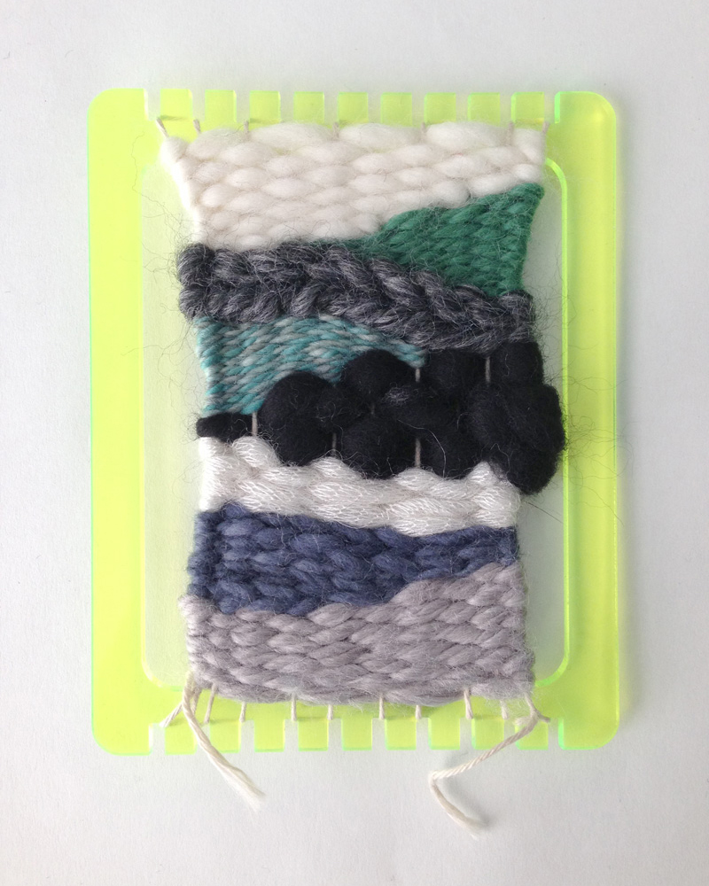
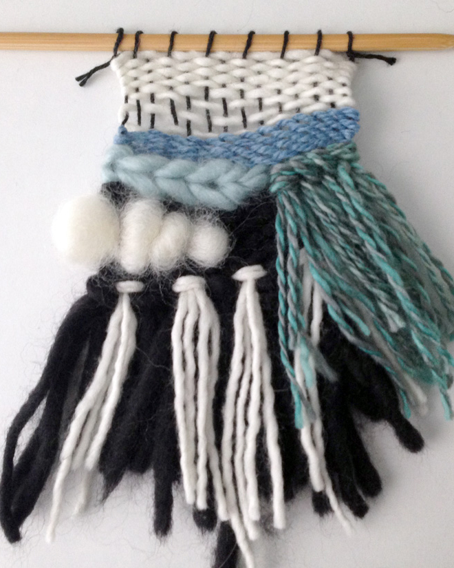
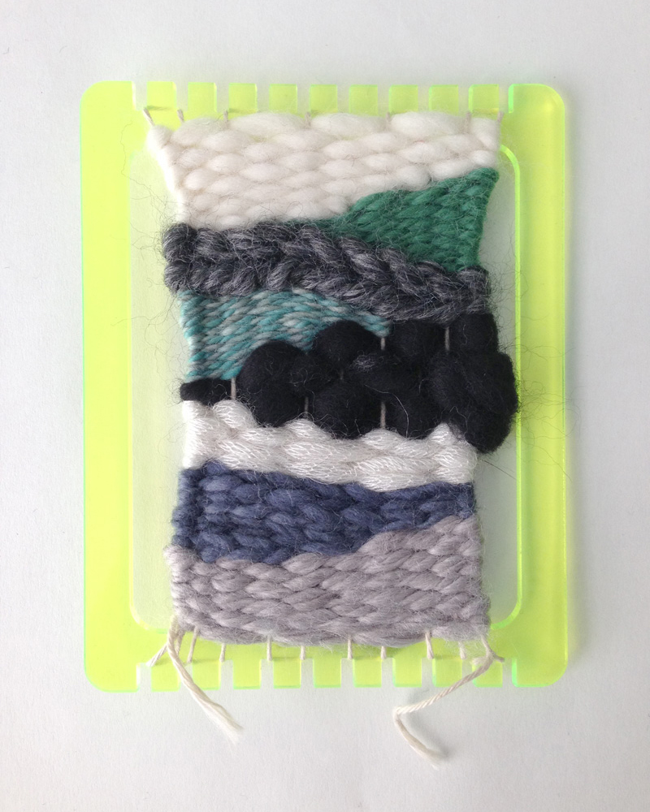
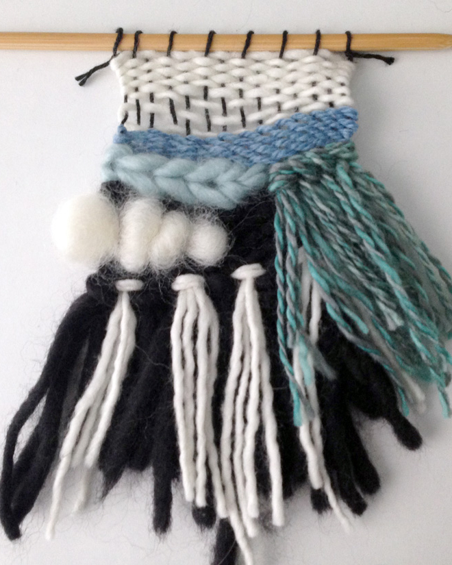

Woven
A study on the history of fiber & computing
Woven is a collection of research and experiments performed over a 9-week period. My goal was to better understand the relationship between traditional textile craft and computing. I chose to focus on the history of weaving and its role in the invention of the first computer.
Preservation —
My first experiment focused on weaving as an ancestor of computing. I found broken and discarded circuit boards, and chose to preserve them in the form of a tapestries. I hoped to draw attention to the design and craftsmanship of the boards, which feature many components that were soldered by hand.
Daily Mini Tapestries —
During my research I was challenged to come up with a daily practice. I chose to weave a tapestry every day. In order to make that feasible, I designed my own mini looms, which I made from acrylic and wood using a laser cutter.
 



Weaving Circuits —
I also experimented by weaving with conductive materials. Learning about the woven structure made it easier to envision how circuitry could be integrated in order to produce e-textiles.